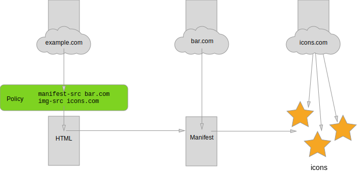

This specification defines a JSON-based manifest file that provides
developers with a centralized place to put metadata associated with a
web application. This metadata includes, but is not limited to, the web
application's name, links to icons, as well as the preferred URL to
open when a user launches the web application. The manifest also allows
developers to declare a default orientation for their web application,
as well as providing the ability to set the display mode for the
application (e.g., in fullscreen). Additionally, the manifest allows a
developer to "scope" a web application to a URL. This restricts the
URLs to which the manifest is applied and provides a means to "deep
link" into a web application from other applications.
Using this metadata, user agents can provide developers with means to
create user experiences that are more comparable to that of a native
application.
This specification also defines the `manifest` link type as a
declarative means to associate a document with a manifest.
Implementors need to be aware that this specification is not stable.
However, aspects of this specification are shipping in at least one
browser (see links to implementation status at the top of this
document). Implementors who are not taking part in the
discussions will find the specification changing out from under them
in incompatible ways. Vendors interested in implementing
this specification before it eventually reaches the Candidate
Recommendation phase should subscribe to the repository
on GitHub and take part in the discussions.
Usage Examples
This section shows how developers can make use of the various features
of this specification.
Example of using a [^link^] element to associate a website with a
manifest. The example also shows how to use [[HTML]]'s
[^link^] and `meta` elements to give
the web application a fallback name and set of icons.
The official file extension for the manifest is `.webmanifest`. Some
web servers recognize this extension and transfer the file using the
standardized MIME type for a manifest
(`application/manifest+json`). Developers can also choose a different
extension (e.g. `.json`) or none at all (e.g. `/api/GetManifest`),
but are strongly encouraged to transfer the manifest using the
`application/manifest+json` MIME type.
Installable web applications
A common use case of a manifest is for a user agent to install a web
application; whereby the user agent provides the end-user with a means
of instantiating a new top-level browsing context that has the
manifest's members applied to it. That is, the manifest's
members, or their defaults, are in effect on the top-level browsing
context. This distinguishes an installed web application from a
traditional bookmark, as opening a web page from a traditional bookmark
will not have the manifest's properties applied to it.
For example, on user agents that support installation, a web
application could be presented and launched in a way that, to the
end-user, is indistinguishable from native applications: such as
appearing as a labeled icon on the home screen, launcher, or start
menu. When launched, the manifest is applied by the user agent
to the top-level browsing context prior to the start URL
being loaded. This gives the user agent an opportunity to apply the
relevant values of the manifest, possibly changing the display
mode and screen orientation of the web application. Alternatively,
and again as an example, the user agent could install the web
application into a list of bookmarks within the user agent itself.
A {{Document}} may either be installable or not. The initial
state of a document is not installable.
At any time, the user agent MAY perform the steps to determine
installability of the document:
Fall back to using the top-level browsing context
{{Document}}'s metadata to to populate manifest in a
user-agent-specific way (e.g., setting
|manifest|.{{WebAppManifest/name}} to the document `title`) and considering the document
installable.
Otherwise, the {{Document}} MAY be considered installable
(at the user agent's discretion; see [[[#installability-signals]]]).
Authority of the manifest's metadata
When a manifest is linked from a {{Document}}, it indicates to
the user agent that the metadata is authoritative: that
is, the user agent SHOULD use the metadata of the manifest instead of
the one in the {{Document}}. However, in cases where metadata is
missing, or in error, a user agent MAY fallback to the {{Document}}
to find suitable replacements for missing manifest members (e.g.,
using `application-name` in place of `short_name`).
Application's name
The application's name is derived from either the
name member or short_name member (if either is present)
- otherwise, it is generated by the user agent or provided by the
end-user.
When either member is missing from the manifest, a user agent MAY use
the name member as a fallback for the short_name member
or vice versa.
If the name and short_name members are undefined, the
user agent SHOULD assign a default name (e.g., "Untitled") that
follows platform conventions. Alternatively, a user agent MAY allow
the end-user to input some text that can serve as the
application's name.
When both the name and short_name members are present,
it is left up to implementations to decide which member is best
suited for the space available (e.g., the short_name member
might be better suited for the space available underneath an icon).
Installation process
The steps to install the web application are given by the
following algorithm:
Invoke Start Register with scope and
src members of the registration, a new
promise, client, manifest URL,
plus the type and update_via_cache
members of the registration. If the settled
promise is rejected, abort these steps.
Perform an unspecified sequence of actions to attempt to register
the web application in the user's operating system (e.g., create
shortcuts that launch the web application, register the application
in the system uninstall menu, etc.). If the installation fails (which
can be for any reason, for example, the OS denying permission to the
user agent to add an icon to the home screen of the device), abort
these steps.
There are multiple ways that the installation process can be
triggered:
An end-user can manually
trigger the installation process through the user agent's
UI, directly invoking the steps
to present an install prompt.
The installation process can occur through an automated
install prompt: that is, a UI that the user agent presents to
the user when, for instance, there are sufficient installability
signals to warrant installation of the web application.
The installation process can occur through a site-triggered
install prompt: the site can programmatically request that the
user agent present an install prompt to the user. The user agent MAY
restrict the availability of this feature to cases where, for
instance, there are sufficient installability signals to
warrant installation of the web application.
Show some user-agent-specific UI, asking the user whether to
proceed with installing the app. See privacy and security considerations for
recommendations relating to this UI. The result of this
choice is either accepted or dismissed.
During the presentation of the install prompt, it is
RECOMMENDED that the user agent allow the end-user to inspect the
icon, name, start URL, origin, etc. pertaining to a web
application. This is to give an end-user an opportunity to make a
conscious decision to approve, and possibly modify, the information
pertaining to the web application before installing it. This also
gives the end-user an opportunity to discern if the web application
is spoofing another web application, by, for example, using an
unexpected icon or name.
It is RECOMMENDED that user agents prevent other applications from
determining which applications are installed on the system (e.g., via
a timing attack on the user agent's cache). This could be done by,
for example, invalidating from the user agent's cache the resources
linked to from the manifest (for example, icons) after a web
application is installed - or by using an entirely different
cache from that used for regular web browsing.
Installability signals
By design, this specification does not provide developers with an
explicit API to "install" a web application. Instead, a
manifest can serve as an installability signal to a
user agent that a web application can be installed.
is able to responsively adapt to display on a variety of screen
sizes, catering for both mobile and desktop.
is able to function without a network connection.
is repeatedly used by the end-user over some extended period of
time.
has been explicitly marked by the user as one that they value and
trust (e.g., by bookmarking or "starring" it).
This list is not exhaustive and some installability signals
might not apply to all user agents. How a user agent makes use of
these installability signals to determine if a web application
can be installed is left to implementers.
Uninstallation
User agents SHOULD provide a mechanism for the user to remove the
installed application.
It is RECOMMENDED that at the time of removal, the user agent also
present the user with an opportunity to revoke other persistent data
and settings associated with the application, such as permissions and
persistent storage.
Installation Events
Installation events and supporting the {{BeforeInstallPrompt}} is
OPTIONAL.
DOM events fired by this specification use the application
life-cycle task source.
BeforeInstallPromptEvent Interface
The beforeinstallprompt event is somewhat misnamed, as it does
not necessarily signal that an automated install prompt will
follow (depending on the user agent, it might just be giving the site
the ability to trigger an install prompt). It is so named for
historical reasons.
If this event's isTrusted attribute
is false, reject
this.[[\userResponsePromise]] with
{{"NotAllowedError"}}, optionally informing the developer that
untrusted events can't call prompt().
This example shows how one might prevent an automated install
prompt from showing until the user clicks a button to show a
site-triggered install prompt. In this way, the site can
leave installation at the user's discretion (rather than prompting
at an arbitrary time), whilst still providing a prominent UI to do
so.
window.addEventListener("beforeinstallprompt", event => {
// Suppress automatic prompting.
event.preventDefault();
// Show the (disabled-by-default) install button. This button
// resolves the installButtonClicked promise when clicked.
installButton.disabled = false;
// Wait for the user to click the button.
installButton.addEventListener("click", async e => {
// The prompt() method can only be used once.
installButton.disabled = true;
// Show the prompt.
const { userChoice } = await event.prompt();
console.info(`user choice was: ${userChoice}`);
});
});
function handleInstalled(ev) {
const date = new Date(ev.timeStamp / 1000);
console.log(`Yay! Our app got installed at ${date.toTimeString()}.`);
}
// Using the event handler IDL attribute
window.onappinstalled = handleInstalled;
// Using .addEventListener()
window.addEventListener("appinstalled", handleInstalled);
A navigation scope is a URL that represents the set
of URLs to which an application context can be navigated while
the manifest is applied. The navigation scope of a
manifest manifest is manifest["scope"].
If the scope member is not present in the manifest, it
defaults to the parent path of the start_url member. For
example, if start_url is /pages/welcome.html, and
scope is missing, the navigation scope will be
/pages/ on the same origin. If start_url is
/pages/ (the trailing slash is important!), the
navigation scope will be /pages/.
Developers should take care, if they rely on the default behaviour,
that all of the application's page URLs begin with the parent path of
the start URL. To be safe, explicitly specify scope.
A URLtarget is said to be within scope of
navigation scopescope if the following algorithm
returns true:
Let scopePath be the [=string/concatenation=] of
scopes's path, using
U+002F (/).
Let targetPath be the [=string/concatenation=] of
target's path, using
U+002F (/).
If target is same origin as scope and
targetPath starts with scopePath, return
true.
Otherwise, return false.
A URLtarget is said to be within scope of a manifest
manifest if target is within scope of the
navigation scope of manifest.
The URL string matching in this algorithm is prefix-based rather than
path-structural (e.g. a target URL string
/prefix-of/resource.html will match an app with scope
/prefix, even though the path segment name is not an exact
match). This is intentional for consistency with Service Workers. To avoid
unexpected behavior, use a scope ending in a /.
If the application context's active document's
[=Document/URL=] is not within
scope of the application context's manifest, the user agent
SHOULD show a prominent UI element indicating the [=Document/URL=] or
at least its origin, including whether it is served over a
secure connection. This UI SHOULD differ from any UI used when the
[=Document/URL=] is within scope, in order to make it obvious
that the user is navigating off scope.
Unlike previous versions of this specification, user agents are no
longer required or allowed to block off-scope navigations, or open
them in a new top-level browsing context. This practice broke
some sites that navigate to an off-scope URL (e.g., to perform
third-party authentication). See Issue 646.
Security considerations
The above recommendation (to show some UI when the application
context is navigated to an out-of-scope URL) is for
security reasons. It ensures that users are always aware of which
origin they are interacting with.
Deep links
A deep link is a URL that is within scope of an installed web
application's manifest.
An application context can be instantiated through a deep
link, in which case, the manifest is applied and the deep
link is loaded within the context of a web application.
The concept of a deep link is useful in that it allows
hyperlinking from one installed application to another. This can be
from a native application to an installed web application
(and possibly vice versa!). Theoretically, this can provide
seamless context switching between native and web applications
through standard hyperlinks. And in the case where a particular web
application is not installed, the OS can just open the link
in the user's preferred web browser.
Implementers are encouraged make such context switching obvious to
the user, for example, by adhering to the human interface
guidelines of the underlying platform with respect to application
switching.
Display modes
A display mode represents how the web application is being
presented within the context of an OS (e.g., in fullscreen, etc.).
Display modes correspond to user interface (UI) metaphors and
functionality in use on a given platform. The UI conventions of the
display modes are purely advisory and implementers are free to
interpret them how they best see fit.
For example, SuperSecure Browser (a fictitious browser) only supports
the minimal-ui and browser display modes,
but a developer declares that she wants fullscreen in
the manifest. In this case, the user agent will first check if it
supports fullscreen (it doesn't), so it falls back to
standalone (which it also doesn't support), and
ultimately falls back to minimal-ui.
The display modes values defined by
DisplayModeType, and their corresponding fallback display
modes are as follows:
fullscreen
Opens the web application without any user agent chrome and takes up
the entirety of the available display area.
Opens the web application to look and feel like a standalone native
application. This can include the application having a different
window, its own icon in the application launcher, etc. In this mode,
the user agent will exclude standard browser UI elements such as an
URL bar, but can include other system UI elements such as a status
bar and/or system back button.
This mode is similar to standalone, but provides the end-user
with some means to access a minimal set of UI elements for
controlling navigation (i.e., back, forward, reload, and perhaps some
way of viewing the document's address). A user agent can include
other platform specific UI elements, such as "share" and "print"
buttons or whatever is customary on the platform and user agent.
The fullscreendisplay mode is orthogonal to, and works
independently of, the [[[FULLSCREEN]]]. The fullscreendisplay mode affects the fullscreen state of the browser window,
while the [[FULLSCREEN]] API operates on an element contained within
the viewport. As such, a web application can have its display
mode set to fullscreen, while
document.fullScreenElement returns null, and
fullscreenEnabled returns false.
Privacy and security considerations
When the web application is running, it is RECOMMENDED that the user
agent provides the end-user a means to access common information
about the web application, such as the origin, start and/or current
URL, granted permissions, and associated icon. How such information
is exposed to end-users is left up to implementers.
Additionally, when applying a manifest that sets the display
mode to anything except "browser", it is RECOMMENDED that
the user agent clearly indicate to the end-user that their are
leaving the normal browsing context of a web browser. Ideally,
launching or switching to a web application is performed in a manner
that is consistent with launching or switching to other applications
in the host platform. For example, a long and obvious animated
transition, or speaking the text "Launching application X".
The 'display-mode' media feature
The display-mode media feature represents,
via a CSS media query [[MEDIAQ]], the display mode of the web
application. This media feature applies to the top-level browsing
context and any child browsing contexts. Child browsing contexts
reflect the display mode of the top-level browsing
context.
A user agent MUST expose the 'display-mode' media
feature irrespective of whether a manifest is being applied to a
browsing context. For example, if the end-user puts the whole user
agent into fullscreen, then the user agent would reflect this change
to CSS and scripts via the 'display-mode' media feature.
Please note that the fullscreendisplay mode is
not directly related to the CSS :fullscreen
pseudo-class specified in the [[[FULLSCREEN]]]. The
:fullscreen pseudo-class matches exclusively when a
[[HTML]] element is put into the fullscreen element stack. However,
a side effect of calling the requestFullscreen()
method on an element using the [[FULLSCREEN]] API is that the
browser window can enter a fullscreen mode at the OS-level. In such
a case, both :fullscreen and (display-mode:
fullscreen) will match.
On some platforms, it is possible for a user to put a browser
window into fullscreen without the aid of the [[[FULLSCREEN]]].
When this happens, the :fullscreen pseudo class will
not match, but (display-mode: fullscreen) will match.
This is exemplified in CSS code below.
/* applies when the window is fullscreen */
@media all and (display-mode: fullscreen) {
...
}
/* applies when an element goes fullscreen */
#game:fullscreen {
...
}
A user agent MUST reflect the applied display mode of the web
application via a CSS media query [[MEDIAQ]].
Examples
An example in CSS:
@media all and (display-mode: minimal-ui) {
/* ... */
}
@media all and (display-mode: standalone) {
/* ... */
}
Accessing the display-mode media feature in ECMAScript through
matchMedia() of [[CSSOM-VIEW]]:
const standalone = matchMedia( '(display-mode: standalone)' );
standalone.onchange = (e) => {
/* handle changes to display mode */
}
if (standalone.matches) {
/* do standalone things */
}
Security and privacy considerations
The 'display-mode' media feature allows an origin
access to aspects of a users local computing environment and,
together with the display member, allows an origin
some measure of control over a user agents native UI: Through a
CSS media query, a script can know the display mode of a web
application. An attacker could, in such a case, exploit the fact
that an application is being displayed in fullscreen to mimic the
user interface of another application.
Associating a resource with a manifest
A resource is said to be associated with a manifest if the
resource representation, an HTML document, has a manifest link relationship.
Linking to a manifest
The manifest keyword can be used with a [[HTML]]
[^link^] element. This keyword creates an external resource
link.
In cases where more than one [^link^] element with a
manifest link type appears in a {{Document}}, the user
agent uses the first [^link^] element in tree order and ignores all
subsequent [^link^] elements with a manifest link type
(even if the first element was erroneous). See the steps for
obtaining a manifest.
To obtain a manifest, the user agent MUST run the steps for
obtaining a manifest. The
appropriate time to obtain the manifest is left up to
implementations. A user agent MAY opt to delay fetching a manifest
until after the document and its other resources have been fully
loaded (i.e., to not delay the availability of content and scripts
required by the document).
A manifest is obtained and applied regardless of the
{{HTMLLinkElement/media}} attribute of the [^link^] element matches
the environment or not.
The steps
for obtaining a manifest are given by the following algorithm.
The algorithm, if successful, returns a processed manifest and
the manifest URL; otherwise, it aborts prematurely and
returns nothing. In the case of nothing being returned, the user
agent MUST ignore the manifest declaration. In running these steps, a
user agent MUST NOT delay the load event.
From the {{Document}} of the top-level browsing context,
let origin be the {{Document}}'s origin, and manifest
link be the first [^link^] element in tree order whose
{{HTMLLinkElement/rel}} attribute contains the token
manifest.
If origin is an opaque origin, then abort these
steps.
If manifest link is null, then abort
these steps.
If manifest link's href attribute's value
is the empty string, then abort these steps.
Let manifest URL be the result of parsing the
value of the href attribute, relative to the
element's base URL. If parsing fails, then abort these steps.
Set |request|'s [=request/URL=] to |manifest URL|.
Set |request|'s [=request/initiator=] to "`manifest`".
If the |manifest link|'s {{HTMLLinkElement/crossOrigin}}
attribute's value is "`use-credentials`", then set |request|'s
[=request/credentials mode=] to "`include`". Otherwise, set
|request|'s [=request/credentials mode=] to "`omit`".
Set |request|'s [=request/mode=] to "`cors`".
Await the result of performing a fetch with
request, letting response be the result.
If response is a network error, then abort
these steps.
The manifest-src and default-src directives govern
the origins from which a user agent can fetch a manifest.
As with other directives, by default the manifest-src
directive is *, meaning that a user agent can,
[[FETCH]]'s CORS permitting, fetch the manifest
cross-domain. Remote origins (e.g., a CDN) wanting to host manifests
for various web applications will need to include the appropriate
CORS response header in their HTTP response (e.g.,
Access-Control-Allow-Origin: https://example.com).

For a [[HTML]] document, [[CSP3]]'s manifest-src
directive controls the sources from which a [[HTML]] document
can load a manifest from. The same CSP policy's
img-src directive controls where the icon's images
can be fetched from.
Processing the manifest
When instructed to issue a developer warning, the user
agent MAY report the conformance violation to the developer in a
user-agent-specific manner (e.g., report the problem in an error
console), or MAY ignore the error and do nothing.
When instructed to ignore, the user agent MUST act as if
whatever manifest, member, or value caused the condition is absent.
The following algorithm provides an extension point: other
specifications that add new members to the manifest are encouraged to
hook themselves into this specification at this point in the
algorithm. They SHOULD NOT modify the existing values already in the
manifest object.
The steps for processing a manifest are given by the
following algorithm. The algorithm takes a stringtext as an argument, which represents a manifest,
and a URLmanifest URL, which represents the
location of the manifest, and a URLdocument URL.
The output from inputting an JSON document into this algorithm is a
processed manifest.
We need to catch throws associated with enumerations in IDL
conversion as the spec might gain new values over time not supported
by all exising browsers. This is especially important as we rely on
enums not defined in this specification.
Let json be the result of parsingtext. If
parsing throws an error:
The text-direction values
defined by TextDirectionType, are the following, implying
that the value of the directionality-capable members is by
default:
If the member is being
displayed in a paragraph by itself, the user agent MUST override Rule
P3 of [[BIDI]], setting the paragraph embedding level to 0 if the
base direction is ltr, or 1 if the base direction
is rtl.
Otherwise, the user agent MUST
behave as if the member is in a left-to-right embedding [[BIDI]] if
the base direction is ltr, or a right-to-left embedding
if the base direction is rtl.
lang member
The lang member is a language tag (string)
that specifies the primary language for the values of the manifest's
directionality-capable members (as knowing the language can
also help with directionality).
A language tag is a string that matches the
production of a Language-Tag defined in the [[BCP47]]
specifications (see the IANA
Language Subtag Registry for an authoritative list of possible
values). That is, a language range is composed of one or more
subtags that are delimited by a U+002D HYPHEN-MINUS ("-").
For example, the 'en-AU' language range represents
English as spoken in Australia, and 'fr-CA' represents
French as spoken in Canada. Language tags that meet the validity
criteria of [[RFC5646]] section 2.2.9 that can be verified without
reference to the IANA Language Subtag Registry are considered
structurally valid.
The steps for processing the lang member is
given by the following algorithm. The algorithm takes a
WebAppManifestmanifest as an argument. This
algorithm returns a DOMString?.
Otherwise, return the result of calling the
CanonicalizeLanguageTag abstract operation, passing
V as the argument.
Return undefined
name member
The name member is a string that represents the
name of the web application as it is usually displayed to the user
(e.g., amongst a list of other applications, or as a label for an
icon).
short_name member
The short_name member is a string that represents a
short version of the name of the web application. It is intended to
be used where there is insufficient space to display the full name of
the web application.
description member
The description member allows the developer to describe
the purpose of the web application.
scope member
The scope member is a string that represents the
navigation scope of this web application's application
context.
The steps for processing the scope member is
given by the following algorithm. The algorithm takes a
USVStringvalue, a URLmanifest
URL, and a URL start URL. This algorithm returns a
URL.
Let default be the result of parsing ".", using
start URL as the base URL.
If value is the empty string, then return
default.
Let scope URL be the result of parsingvalue, using manifest URL as the
base URL.
The default scope (if scope is omitted or an error) is
the start URL, with its filename, query, and fragment
removed.
icons member
The icons member is an array of
ImageResources that can serve as iconic representations of the
web application in various contexts. For example, they can be used to
represent the web application amongst a list of other applications,
or to integrate the web application with an OS's task switcher and/or system
preferences.
If there are multiple equally appropriate icons in icons,
a user agent MUST use the last one declared in order at the time that
the user agent collected the list of icons. If the user
agent tries to use an icon but that icon is determined, upon closer
examination, to in fact be inappropriate (e.g. because its content
type is unsupported), then the user agent MUST try the
next-most-appropriate icon as determined by examining the
ImageResource's members.
In the following example, the developer has made the following
choices about the icons associated with the web application:
The developer has included two icons at the same size, but in
two different formats. One is explicitly marked as WebP through the
type member. If the user agent doesn't support WebP,
it falls back to the second icon of the same size. The MIME
type of this icon can then be either determined via a HTTP
header, or can be sniffed by
the user agent once the first few bytes of the icon are received.
The developer wants to use an SVG for greater than or equal to
257x257px. She has found that the SVG file looks too blurry at
small sizes, even on high-density screens. To deal with this
problem, she's included an SVG icon that is only used when the
dimensions are at least 257px. Otherwise, the user agent uses the
ICO file (hd_hi.ico), which includes a gamut of raster icons
individually tailored for small display sizes.
The orientation member is a string that serves as
the default orientation for all top-level browsing
contexts of the web application. The possible values are those of
the {{OrientationLockType}} enum defined in [[SCREEN-ORIENTATION]].
If the user agent honors the value of the orientation member
as the default orientation, then that serves as the default
orientation for the life of the web application (unless
overridden by some other means at runtime). This means that the user
agent MUST return the orientation to the default orientation
any time the orientation is unlocked [[SCREEN-ORIENTATION]] or the
top-level browsing context is navigated.
Although the specification relies on the [[SCREEN-ORIENTATION]]'s
{{OrientationLockType}}, it is OPTIONAL for a user agent to implement
the [[SCREEN-ORIENTATION]] API. Supporting the [[SCREEN-ORIENTATION]]
API is, of course, RECOMMENDED.
Certain UI/UX concerns and/or platform conventions will mean that
some screen orientations and display modes cannot be used
together. Which orientations and display modes cannot be used
together is left to the discretion of implementers. For example, for
some user agents, it might not make sense to change the default
orientation of an application while in browserdisplay mode.
Once the web application is running, other means can change the
orientation of a top-level browsing context (such as via
[[SCREEN-ORIENTATION]] API).
start_url member
The start_url member is a string that represents
the start URL , which is URL that the developer
would prefer the user agent load when the user launches the web
application (e.g., when the user clicks on the icon of the web
application from a device's application menu or homescreen).
The start_url member is purely advisory, and a user agent MAY
ignore it or provide the end-user the choice not to make use
of it. A user agent MAY also allow the end-user to modify the URL
when, for instance, a bookmark for the web application is being
created or any time thereafter.
The steps for processing the start_url member
are given by the following algorithm. The algorithm takes a
USVStringvalue, a URLmanifest
URL, and a URLdocument URL. This algorithm
returns a URL.
If value is the empty string, return
document URL.
Let start URL be the result of parsingvalue, using manifest URL as the
base URL.
For example, if the value of start_url is
../start_point.html, and the manifest's URL is
https://example.com/resources/manifest.webmanifest,
then the result of URL parsing would be
https://example.com/start_point.html.
It's conceivable that the start_url could be crafted to
indicate that the application was launched from outside the browser
(e.g., "start_url": "index.html?launcher=homescreen").
This can be useful for analytics and possibly other customizations.
However, it is also conceivable that developers could encode
strings into the start_url that uniquely identify the user (e.g., a
server assigned UUID). This is fingerprinting/privacy
sensitive information that the user might not be aware of.
Given the above, it is RECOMMENDED that, upon installation, or any
time thereafter, a user agent allows the user to inspect and, if
necessary, modify the start URL of an application.
serviceworker member
The serviceworker member describes a service worker as
defined in [[SERVICE-WORKERS-1]].
Other service worker registrations can be done, for instance by a
script; if these have different scopes they will be considered
separate registrations. If they have the same scope and script URL,
they coalesce. If they have different script URLs, last one wins.
The steps for processing the serviceworker
member are given by the following algorithm. The algorithm
takes a ServiceWorkerRegistrationObjectregistration. This algorithm returns a
ServiceWorkerRegistrationObjectregistration, which
can be undefined.
In the following example, the web application is listing a service
worker for the /foo scope, bypassing the user agent
cache when fetching the "sw.js" source:
The theme_color member serves as the default theme
color for an application context. What constitutes a theme
color is defined in [[HTML]].
If the user agent honors the value of the theme_color
member as the default theme color, then that color serves as
the theme color for all browsing contexts to which the
manifest is applied. However, a document may override the
default theme color through the inclusion of a valid [[HTML]]
meta element whose name attribute is
"theme-color".
The steps for processing the theme_color
member are given by the following algorithm. The algorithm
takes a USVStringtheme color as an argument. This
algorithm returns a USVString?.
Let potential color be the result of running
[[CSS-SYNTAX-3]]'s parse a component value algorithm with
theme color as input. If parsing returns a syntax error,
return undefined.
Let color be the result of attempting to parse
potential color as a CSS color, as per [[CSS-SYNTAX-3]].
If parsing fails:
A related application is an application accessible to the
underlying application platform that has a relationship with the web
application associated with a manifest.
The related_applications member lists related
applications and serves as an indication of such a relationship
between web application and related applications. This
relationship is unidirectional and unless a listed application claims
the same relationship, the user agent MUST NOT assume a
bi-directional endorsement.
Example of usages of the related_applications could be a
crawler that would use that information to gather more information
about the web application or a browser that could suggest a listed
application as an alternative if the user wants to install the web
application.
The prefer_related_applications member is a boolean value
that is used as a hint for the user agent to say that related
applications should be preferred over the web application. If the
prefer_related_applications is set to true,
and the user agent wants to suggest to install the web application,
the user agent might want to suggest installing one of the related
applications instead.
background_color member
The background_color member describes the expected
background color of the web application. It repeats what is already
available in the application stylesheet but can be used by the
user agent to draw the background color of a web application
for which the manifest is known before the files are actually
available, whether they are fetched from the network or retrieved
from disk.
The background_color member is only meant to improve the user
experience while a web application is loading and MUST NOT be used by
the user agent as the background color when the web
application's stylesheet is available.
The steps for processing the background_color
member are given by the following algorithm. The algorithm
takes a USVStringbackground color as an argument.
This algorithm returns a USVString?.
Let potential color be the result of running
[[CSS-SYNTAX-3]]'s parse a component value algorithm with
background color as input. If parsing returns a syntax
error, return undefined.
Let color be the result of attempting to parse
potential color as a CSS color, as per [[CSS-SYNTAX-3]].
If parsing fails:
The categories member describes the expected application
categories to which the web application belongs.
The categories member is only meant as a hint to catalogs or
stores listing web applications and it is expected that these will
make a best effort to find appropriate categories (or category) under
which to list the web application. Like search engines and meta
keywords, catalogs and stores are not required to honor this hint.
The steps for processing the categories
member are given by the following algorithm. The algorithm
takes a sequence<USVString> categories as an
argument. This algorithm returns an
Array<USVString>.
[=list/For each=] category of categories:
[=set/Replace=] category within
categories with category, ascii
lowercased.
Return categories.
The categories string array is case insensitive and converted
to lower-case by following the processing algorithm. Thus,
sports, Sports, SPORTS, and
SpOrTs are all equivalent.
Manifest authors are encouraged to use lower-case.
This specification does not define the particular values for
USVStrings for the categories member. However, the
working group maintains a list of known
values in our wiki.
screenshots member
The screenshots member is an array of
ImageResources, representing the web application in common
usage scenarios.
iarc_rating_id member
The iarc_rating_id member is a string that
represents the International
Age Rating Coalition (IARC) certification code of the web
application. It is intended to be used to determine which ages the
web application is appropriate for.
An IARC certificate can be obtained via participating storefronts,
intended to be used for distributing the web app. The
iarc_rating_id member only takes a single certification code.
The same code can be shared across participating storefronts, as long
as the distributed product remains the same (i.e., doesnt serve
totally different code paths depending on user agent sniffing and the
like) and the other storefronts support it.
The following shows a very simple manifest with the
iarc_rating_id member.
The shortcuts member is an array of
ShortcutItems that provide access to key tasks within a web
application.
Shortcuts could, for instance, be used to link directly to a user's
timeline within a social media application or to their recent orders
in an e-commerce context.
How shortcuts are presented, and how many of them are shown to the
user, is at the discretion of the user agent and/or operating system.
Developers are encouraged to order their shortcuts by priority, with
the most critical shortcuts appearing first in the array.
The steps for processing the shortcuts member
are given by the following algorithm. The algorithm takes a
sequence<ShortcutItem>
shortcuts as an argument. This algorithm returns an
sequence<ShortcutItem>. For
each shortcut (ShortcutItem) in the sequence, set
shortcut.icons to the result of running processing
`ImageResource` members given shortcut.icons and
manifest URL. For each shortcut
(ShortcutItem) in the sequence, parse
shortcut["url"] using manifest URL as
the base URL.
A user agent SHOULD expose shortcuts via interactions that are
consistent with exposure of an application icon's context menu in the
host operating system (e.g., right click, long press). A user agent
SHOULD render the shortcuts in the same order as they are provided in
the manifest. A user agent SHOULD represent the shortcuts in a manner
consistent with exposure of an application icon's context menu in the
host operating system. A user agent MAY truncate the list of
shortcuts presented in order to remain consistent with the
conventions or limitations of the host operating system.
In the following example, the developer has included two shortcuts.
Assuming the the manifest's URL is
https://example.com/manifest.webmanifest:
The first shortcut would be displayed with the text "Play
Later". If the operating system supports icons for context menu
items and it also supports SVG images for that purpose, the user
agent would present
https://example.com/icons/play-later.svg next to the
text. When launched, the user agent would instantiate a new
top-level browsing context and navigate to
https://example.com/play-later.
The second shortcut would be displayed with the text
"Subscriptions". When launched, the user agent would instantiate a
new top-level browsing context and navigate to
https://example.com/subscriptions?sort=desc.
{
"shortcuts": [
{
"name": "Play Later",
"description": "View the list of podcasts you saved for later",
"url": "/play-later",
"icons": [
{
"src": "/icons/play-later.svg",
"type": "image/svg+xml",
"purpose": "any"
}
]
},
{
"name": "Subscriptions",
"description": "View the list of podcasts you listen to",
"url": "/subscriptions?sort=desc"
}
]
}
Each ImageResource represents an image that is used as part of a
web application, suitable to use in various contexts depending on the
semantics of the member that is using the object (e.g., an icon that is
part of an application menu, etc.). For an image resource, this
specification provides developers with a means of specifying the
dimensions, and MIME type of an image
(i.e., a "responsive image" solution [[RESPIMG-USECASES]]). A user
agent can use these values to select an image that is best suited to
display on the end-user's device or most closely matches the end-user's
preferences.
User agents may modify the images associated with an
ImageResource to better match the platforms visual style before
displaying it to the user, for example by rounding the corners or
painting it in a specific color. It is recommended that developers
prepare their image resources for such scenarios to avoid losing
important information through, e.g., change of color or clipped
corners.
Fetching image resources
To fetch the image associated with an ImageResource,
the user agent MUST run the steps to fetch an image
resource. The algorithm takes an image URL
(ImageResource.src), the manifest URL, and the
{{Document}} document from which the manifest was linked.
It returns a Response:
Perform a fetch using request and return the
response.
Content security policy of image resources
The security policy that governs whether a user agent can
fetch an icon image is governed by the img-src directive
[[CSP3]] associated with the manifest's owner {{Document}}.
For example, given the following img-src directive in
the Content-Security-Policy HTTP header of the
manifest's owner {{Document}}:
When an ImageResource is used as an icon, a
developer can hint that the image is intended to serve some special
purpose in the context of the host OS (i.e., for better integration).
User agents SHOULD NOT use an icon other than for its stated
purpose.
For example, an icon with purpose "badge" could be used as a
badge or pinned icon that is visually distinct, in color or form,
from an application's launch icon. The user agent uses the value of
the purpose member as a hint to determine where and how an
ImageResource is displayed. Unless declared otherwise by the
developer, a user agent can use an icon for any purpose.
The icon purposes are as follows:
badge:
A user agent can present this icon where space constraints and/or
color requirements differ from those of the application icon.
maskable:
The image is designed with icon masks and
safe zone in mind, such that any part of the image that is
outside the safe zone can safely be ignored and masked away
by the user agent.
any:
The user agent is free to display the icon in any context.
If an icon contains multiple purposes, it could be used for any of
those purposes. If none of the stated purposes are recognized, the
icon is totally ignored. For example, if an icon has purpose
"badge fizzbuzz", then it could be used as a badge, but
if an icon has just the purpose "fizzbuzz", then it will
be ignored.
The steps for processing the `purpose` member of an image
are given by the following algorithm. The algorithm takes an
ImageResource |image:ImageResource|. This algorithm returns a
[=set=] or failure.
If [=Type=](|image|["purpose"]) it not String, or
|image|["purpose"] consists solely of [=ascii whitespace=], then
return the [=set=] "any" .
Let |keywords:list<string>| be the result of [=split on
ASCII whitespace=] |image|["purpose"].
If |keywords| is empty, then return the [=set=] "any" .
If |canonicalKeyword| is not one of the [=icon purposes=], or
|purposes| [=contains=] |keyword|, then [=issue a developer
warning=] and [=iteration/continue=].
Otherwise, [=set/append=] |canonicalKeyword| to |purposes|.
If |purposes| [=list/is empty=], then return failure.
Return |purposes|.
In the following example, the web application is listing two icons
to be used as a badge, one of which is specifically designed for
the Android platform.
Some platforms have their own preferred icon shape, but as web
applications should work across multiple platforms, it is possible to
indicate that an icon can have a user-agent-specified mask applied by
adding the maskable purpose. This allows the platform to
ensure that the icon looks well integrated with the platform, and
even apply different masks and background colors in different places
throughout the platform.
The safe zone is the area within a maskable icon
which is guaranteed to always be visible, regardless of user agent
preferences. It is defined as a circle with center point in the
center of the icon and with a radius of 2/5 (40%) of the icon size,
which means the smaller of the icon width and height, in case the
icon is not square.
Designers of maskable icons will want to make sure that all
important parts are within the safe zone.
The safe zone is a centrally positioned circle, with radius 2/5
(40%) of the minimum of the icon's width and height.
All pixels in this zone are guaranteed to be seen in all masks.
Pixels outside the safe zone are not guaranteed to (but can) be
visible depending on the applied mask.
The user agent MAY apply a mask of any size, making any pixels that
are more than 2/5ths of the image size (minimum of width and height
if non-square) away from the center (the safe zone)
transparent.
The user agent MUST NOT make any pixel within the safe zone
transparent.
The user agent MAY enlarge the icon by adding additional padding.
If the icon contains transparent pixels, the user agent MUST
composite the icon onto a solid color (eg. white) of the user agent's
choice.
It is suggested that designers avoid using transparent pixels in
maskable icons.
Examples of masks
By staying inside the safe zone, most icons will have around
10% padding on the top, bottom, right and left with no content or
non-essential content, such as an icon background. It is suggested
that developers check their icon when all but the safe zone is
masked out.
Icons with "maskable" purpose
Image
The base image with transparent background
Safe zone
Circle with radius 2/5 (40%) of the icon size
Mask examples
Rounded square
Android
Squircle
Android
Circle
Android
Rounded square
iOS
Fullbleed
Windows
sizes member
The sizes member of an ImageResource is a string
consisting of an unordered set of unique space-separated
tokens which are ASCII case-insensitive that represents
the dimensions of an image. Each keyword is either an ASCII
case-insensitive match for the string "any", or a value that consists of two valid
non-negative integers that do not have a leading U+0030 DIGIT
ZERO (0) character and that are separated by a single U+0078 LATIN
SMALL LETTER X or U+0058 LATIN CAPITAL LETTER X character. The
keywords represent icon sizes in raw pixels (as opposed to CSS
pixels). When multiple ImageResources are available, a user
agent MAY use the value to decide which icon is most suitable for a
display context (and ignore any that are inappropriate).
The steps for processing the sizes member of an
image are given by the following algorithm. The algorithm takes
an ImageResourceimage. This algorithm will return
a set.
The src member of an ImageResource is a URL from
which a user agent can fetch the image's data.
type member
The type member of an ImageResource is a hint as to the
MIME type of the image. The purpose of this member is to allow
a user agent to ignore images of MIME types it does not support.
There is no default MIME type for image resources. However, for the
purposes of determining the type of the resource, user agents
must expect the resource to be an image.
The steps for processing the type member of an
image are given by the following algorithm. The algorithm takes
an image object as an argument, and returns either a
string or undefined.
If value is not a valid MIME type string or the
value of type is not a supported MIME type, issue a
developer warning and return undefined.
Return value.
platform member
The platform member represents the platform to which a
containing object applies.
processing an array of image resources
The steps for processing ImageResource members are
given by the following algorithm. The algorithm takes a
Array<ImageResource> entries and a URLmanifest URL. This algorithm returns an
Array<ImageResource>.
Let imageResources be a new Array object created as if
by the expression [].
[=list/For each=] entry of entries:
If entry["src"] is not undefined:
Let image be a new object created as if by the
expression ({}).
Set image["src"] to the result of parsingentry["src"] using manifest URL as the base
URL.
Each ShortcutItem represents a link to a key task or page within
a web app. A user agent can use these values to assemble a context menu
to be displayed by the operating system when a user engages with the
web app's icon. When the user invokes a shortcut from the operating
system menu, the user agent SHOULD run Launching a shortcut.
name member
The name member of a ShortcutItem is a
string that represents the name of the shortcut as it is
usually displayed to the user in a context menu.
short_name member
The short_name member of a ShortcutItem is a
string that represents a short version of the name of the
shortcut. It is intended to be used where there is insufficient space
to display the full name of the shortcut.
description member
The description member of a ShortcutItem is a
string that allows the developer to describe the purpose of
the shortcut. User agents MAY expose this information to assistive
technology.
url member
The url member of a ShortcutItem is the URL
that opens when the associated shortcut is activated.
icons member
The icons member of an ShortcutItem member is an
array of ImageResources that can serve as iconic
representations of the shortcut in various contexts.
A platform represents a software distribution ecosystem or
possibly an operating system.
This specification does not define the particular values for a the
platform member. However, the working group maintains a
list of
known platform values in our wiki.
The ServiceWorkerRegistrationObject dictionary and its members
A ServiceWorkerRegistrationObject dictionary represents a
service worker registration for the web application.
The steps for processing the src member of a
service worker are given by the following algorithm. The
algorithm takes a USVStringsource URL, and a
URLmanifest URL, which is the URL from
which the manifest was fetched. This algorithm will return
a URL or undefined.
If Type(source URL) is not String or
source URL is the empty string, then return
undefined.
Otherwise, parsesource URL using manifest
URL as the base URL and return the result.
The steps for processing the scope member of a
service worker are given by the following algorithm. The
algorithm takes a USVStringscope URL, and a
URLmanifest URL, which is the URL from
which the manifest was fetched. This algorithm will return
a URL or undefined.
If scope URL is undefined, return
undefined
Otherwise, parsescope URL using manifest
URL as the base URL and return the result.
type member
The type member of a
ServiceWorkerRegistrationObject dictionary is the service
worker's {{WorkerType}}. The possible values are those of the
{{WorkerType}} enum defined in [[HTML]].
In the following example, the web application is listing two
different related applications, one on Google Play Store and the
other one on the iTunes Store. The one on the Google Play Store has
an Android package name, a minimum version specifier, and
cryptographic fingerprints used for verification, in a
Play-Store-specific manner.
The steps for processing the url member of an
application are given by the following algorithm. The algorithm
takes a USVStringapplication URL. This algorithm
will return an URL or undefined.
If application URL is undefined, return
undefined.
Otherwise, parseapplication URL and if the
result is not failure, return the result, otherwise return
undefined.
id member
The id member of an ExternalApplicationResource
dictionary represents the id which is used to represent the
application on the platform.
min_version member
The min_version member of an
ExternalApplicationResource dictionary represents the minimum
version of the application that is considered related to this web
app. This version is a string with platform-specific syntax
and semantics.
Each Fingerprints represents a set of cryptographic
fingerprints used for verifying the application. A fingerprint has
the following two properties: type and value.
Each of these are strings, but their syntax and semantics are
platform-defined.
IANA considerations
The following registrations are for community review and will be
submitted to the IESG for
review, approval, and registration with IANA.
Media type registration
This section contains the required text for MIME media type
registration with IANA.
The MIME type for a manifest is
application/manifest+json.
If the protocol over which the manifest is transferred supports the
[[MIME-TYPES]] specification (e.g. HTTP), it is RECOMMENDED that the
manifest be labeled with the MIME type for a manifest.
Type name:
application
Subtype name:
manifest+json
Required parameters:
N/A
Optional parameters:
N/A
Encoding considerations:
Same as for application/json
Security and privacy considerations:
This specification does not directly deal with high-value data.
However, installed web applications and their data could
be seen as "high value" (particularly from a privacy
perspective).
As the manifest format is JSON and will commonly be encoded using
[[UNICODE]], the security considerations described in
[[ECMA-404]] and [[UNICODE-SECURITY]] apply. In addition, because
there is no way to prevent developers from including
custom/unrestrained data in a manifest, implementors need
to impose their own implementation-specific limits on the values
of otherwise unconstrained member types, e.g. to prevent denial
of service attacks, to guard against running out of memory, or to
work around platform-specific limitations.
Web applications will generally contain ECMAScript, HTML, CSS
files, and other media, which are executed in a sand-boxed
environment. As such, implementors need to be aware of the
security implications for the types they support. Specifically,
implementors need to consider the security implications outlined
in at least the following specifications: [[CSS-MIME]],
[[ECMAScript-MIME]], [[HTML]].
As web applications can contain content that is able to
simultaneously interact with the local device and a remote host,
implementors need to consider the privacy implications resulting
from exposing private information to a remote host. Mitigation
and in-depth defensive measures are an implementation
responsibility and not prescribed by this specification. However,
in designing these measures, implementors are advised to enable
user awareness of information sharing, and to provide easy access
to interfaces that enable revocation of permissions.
As this specification allows for the declaration of URLs within
certain members of a manifest, implementors need to consider the
security considerations discussed in the [[URL]] specification.
Implementations intending to display IRIs and
IDNA addresses
found in the manifest are strongly encouraged to follow the
security advice given in [[UNICODE-SECURITY]].
Developers need to be aware of the security considerations
discussed throughout the [[CSP3]] specification, particularly in
relation to making data: a valid source for the
purpose of inlining a manifest. Doing so can enable XSS
attacks by allowing a manifest to be included directly in the
document itself; this is best avoided completely.
Applications that use this MIME type:
Web browsers
Additional information:
Magic number(s):
N/A
File extension(s):
.webmanifest
Macintosh file type code(s):
TEXT
Person & email address to contact for further information:
This document reuses text from the [[HTML]] specification, as permitted
by the license of that specification.
Dave Raggett and Dominique Hazael-Massieux contributed to this
specification via the HTML5Apps project.
Claudio Gomboli for icon example images.
There is only one class of product that can claim conformance to this
specification: a user agent.
Although this specification is primarily targeted at web browsers, it
is feasible that other software could also implement this specification
in a conforming manner. For instance, search engines, or crawlers,
could find and process manifests to build up catalogs of sites that
potentially work as installable web applications.
Extensibility
This specification is designed to be extensible. Other specifications
are encouraged to define new members for the manifest. However, in
doing so, please follow the conventions used in this specification.
In particular, use the extension point to hook into the steps
for processing a manifest. Also, be sure to specify the steps
for processing your particular member in the manner set forth in this
specification. This will help keep this part of the platform
consistent.
To allow the community can easily find extensions, please add your
extensions to the Extensions
Registry.
When specifying a new member, don't override or monkey patch
anything defined in this specification. Also, don't assume your
member will be processed before or after any other member. Keep your
new member, and its processing, atomic and self contained. Note also
that implementations are free to ignore any member they do not
recognize or support.
If you are writing a specification and temporarily want to patch this
specification to help implementations along, file a bug so the
community is informed of what you are trying to do.
Proprietary manifest members
Although proprietary extensions are undesirable, they can't
realistically be avoided. As such, the RECOMMENDED way to add a new
proprietary manifest member as an extension is to use a vendor
prefix.
We encourage implementors to add proprietary extensions to our
Extensions
Registry. This allows the community to track what extensions
vendors and/or the web community have defined and documented.
Periodically, we will consider those extensions for
standardization.
The following is an example of three hypothetical vendor
extensions.
An extensive discussion of why we chose to use JSON instead of HTML
meta/link tags for this specification is
available on GitHub and on the
www-tag
list. Below is a short summary of the key points raised in those
discussions.
The document format defined in this specification provides a unified
means of encapsulating metadata about a Web application in a way that
we hope will avoid existing pitfalls with both proprietary and
[[HTML]]'s meta/link tags. Those pitfalls
include:
Developers have to duplicate the icons and application name in each
page of a web site, leading to significant redundancy across pages.
This is compounded if that information never gets used by the user
agent (e.g., the user never bookmarks the web application).
Spreading metadata across multiple documents can cause data to fall
out of sync.
If the metadata for a web application lives in a HTML document,
that significantly increases the cost to user agents (and users) of
checking for updates to the metadata of a site. Since the HTML file is
likely to change often, it means that a user agent will often have to
download the whole HTML file in order to check if any of the relevant
meta tags have changed. If this resource contains inlined resources
like JavaScript, images, or stylesheets, this could be a non-trivial
download.
Although it would be unrealistic to think that this specification won't
bring its own set of problems, externalizing this data in the form of a
manifest solves the problems described above. These problems are solved
by:
Making the manifest externally linkable: External manifest files
can be cached as external resources, saving both bytes and redundancy
in the markup.
Flexible value types: unlike HTML attributes, members of the
manifest can represent data using complex types, such as objects and
arrays, rather than just strings. This solves the problem of the
awkward and highly inconsistent formats the values of proprietary
meta tags are currently using, especially when a tag's
value contains several sub-values.
In addition, standardizing the functionality currently provided by the
various meta tag-based solutions within the manifest
solves the problem of having to declare large number of proprietary and
standard [[HTML]] tags that all achieve the same thing. Of course, this
hinges on the standard actually getting implemented by browsers and
those browsers getting widely deployed to users: if this happens, the
Web community might be able to retire many of the proprietary
meta tags plaguing the Web at the time of writing. More
information about the proprietary tags can be found in the
Use
Cases and Requirements for Installable Web Apps .
Lastly, this specification does not make the standardized solutions
found in [[HTML]] redundant. When members like the name or
icons is missing from the manifest, user agents can search
in a manifest's owner [[HTML]] document for things like icons and the
application name (or a user agent might even fallback to proprietary
tags/metadata, if they are present in a document).
It is expected that authors will localize the content of a manifest by
using one of the following options:
Dynamically setting the language:
This can include, for instance, asking the end-user what their
preferred language is and dynamically adding or replacing the
manifest link relationship to the document based on that language
preference (e.g., using a URL like "manifest.php?lang=fr").
Using content-negotiation, or geotargeting, etc. on the server:
The server that hosts the web application could attempt to
predetermine the end-user's language by using geotargeting or by
using content negotiation (e.g., using [[RFC7540]]'s
"Accept-Language" header, or even a custom HTTP header).
Given the options above, developers need to be mindful of the
end-user's privacy with respect to their preferred language: When the
end-user has explicitly indicated their language preference to a web
application (i.e., when not just using the user-agent default language
settings), sending the end-user's preferred language in the clear over
the wire is generally not OK. Doing so would reveal personal
information about an end-user. As such, developers are encouraged to
use [[TLS]] to reduce the chances of pervasive monitoring of their Web
applications [[RFC7258]].
As the manifest uses the JSON format, this specification relies on the
types defined in [[ECMA-404]] specification: namely object,
array, number, string,
true, false, and undefined.
Strict type checking is not enforced by this specification. Instead,
each member's definition specifies the steps required to process a
particular member and what to do when a type does not match what is
expected.
[[URL]] defines the following terms:
URL parser
[[SCREEN-ORIENTATION]] defines the following terms: